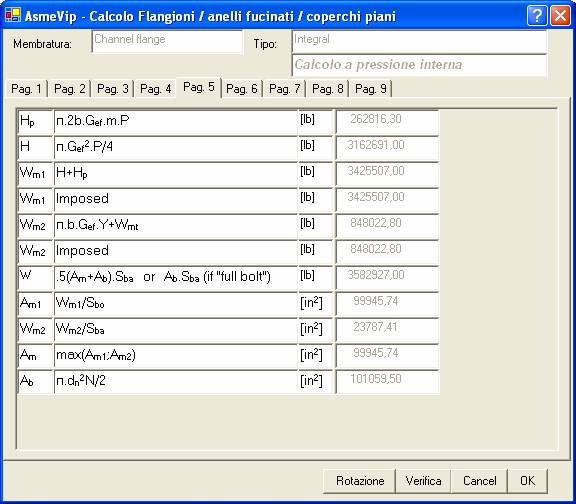

Questi valori, e quelli ripostati sulle pagine successive, sono calcolati dal programma e non sono modificabili.
I carichi Wm1 e Wm2 imposti sono pari, nel calcolo in condizioni di progetto, ai carichi calcolati secondo le formule riportate in questa pagina se non vi sono imposizioni da flange accoppiate.